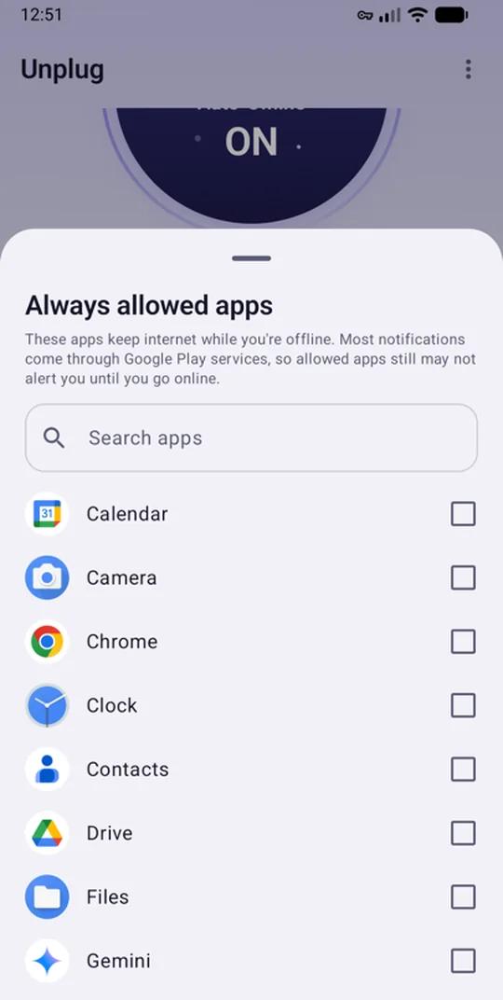
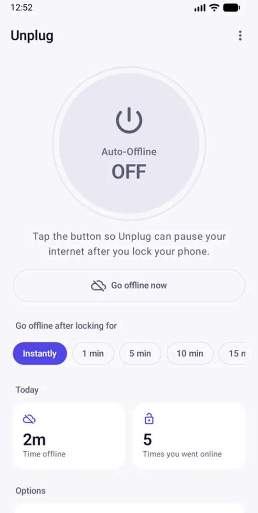
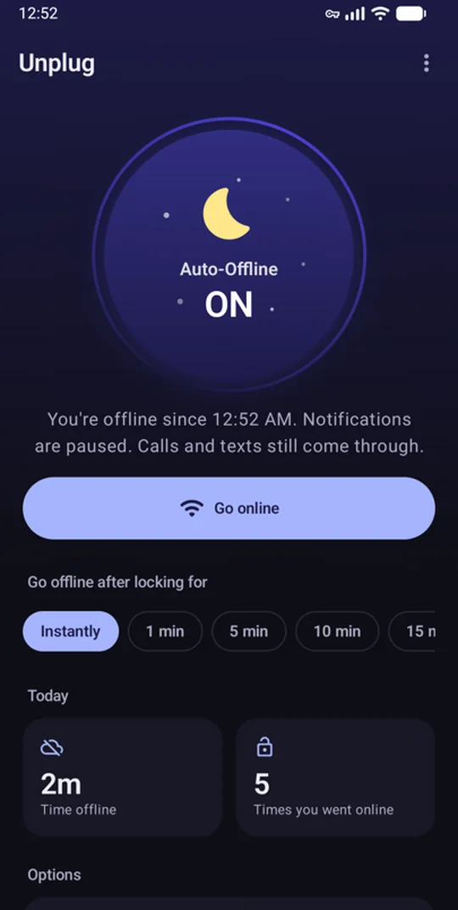
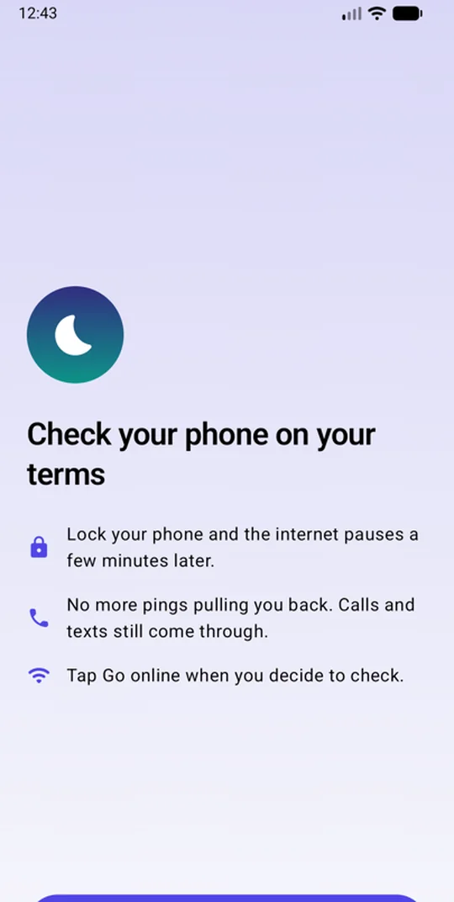

Ampliply/Apps/Unplug: Auto Offline
Unplug: Auto Offline
Your phone goes quiet a few minutes after you lock it, so notifications stop pulling you back. Tap Go online when you decide to check. Calls and texts keep coming through the whole time.
The problem is not your willpower. It is the buzz.
Screen‑time dashboards tell you off after the fact. App blockers nag you at the moment you are least receptive. Neither stops the thing that actually breaks your evening: a phone that keeps lighting up and asking for attention it has not earned.
Unplug takes a quieter route. A few minutes after you lock your phone, the data stops. The notifications are simply not delivered, so there is nothing to resist. When you want to check, you tap once and everything arrives at a moment you chose.
Nothing to resist
No notification arrives, so there is no urge to check.
Still reachable
Phone calls and text messages are untouched.
One tap back
From the app or from the Quick Settings tile in your shade.
Quiet progress
Time offline and how often you checked, today only.
A look at it
One screen, one big button, and the settings you will actually change.




Small app, the right knobs
Your delay
Go offline instantly when the screen locks, or after 5, 10, 15, 30 or 60 minutes. Ten minutes is the default, which is long enough that a quick lock‑and‑unlock never interrupts you.
Always allowed apps
Pick the apps that keep their connection while you are offline — maps, messaging, your bank. Only the package names you choose are saved, and they stay on your phone.
Reconnect on unlock
Off by default, so you stay offline until you decide. Turn it on and the internet is back the moment you unlock.
Quick Settings tile
Add Unplug to your notification shade and switch between online and offline without opening the app at all.
Today’s numbers
Time spent offline and how many times you went online — for today, on your phone, for you. No streaks, no league table, no guilt.
Light and dark
Follows your system theme, and the offline state is readable at a glance in both.
A local VPN that throws traffic away
Android does not let an app switch Wi‑Fi or mobile data off. So Unplug does the next best thing: it starts a VPN on the device and quietly discards whatever is sent to it.
That VPN is local. It has no server and no remote endpoint. Traffic sent to it is not read, inspected, logged, modified, forwarded or shared with anyone — it simply does not leave your phone. That is also why only one VPN can run at a time on Android: if you switch on another one, Unplug steps aside and tells you.
Because the phone is genuinely offline rather than muted, you also get the side effects you would expect: less background battery drain overnight, and no data used while you sleep.
Permissions, and why
- VPN service — the only way an app can pause internet access on Android. You grant it once, in Android’s own dialog.
- Foreground service — so Android does not kill the watcher that notices when you lock and unlock your phone.
- Notifications — a single quiet status notification showing whether you are online or offline, as Android requires for this kind of service.
- Installed apps list — only when you open “Always allowed apps”, to show you the apps in your launcher. The list is not stored or sent anywhere.
No location, no contacts, no camera, no microphone, no files.
Questions
The ones people ask before installing a VPN‑based app — answered plainly.
Is my traffic being sent through someone's server?
No. The VPN is local to your phone and has no server behind it. There is nothing to send traffic to and nothing to log. Packets reaching the VPN are discarded on the device.
Will I still get calls and texts?
Yes. Unplug pauses internet data only. Voice calls and SMS run on a different part of your carrier’s network and are untouched.
What about my alarms and timers?
They are local to the phone and work normally. Anything that needs the network to fire — a message, an email, a push notification — waits until you go back online.
Can I use another VPN at the same time?
Android allows only one VPN at a time. If you start another, Android switches Unplug’s offline mode off and Unplug tells you what happened.
It stops working after a while on my phone
Some manufacturers — Xiaomi, Oppo, Vivo and some Samsung models — aggressively stop background apps. Set Unplug to “Unrestricted” or “Don’t optimise” in your battery settings. There is a shortcut to that screen in the app’s menu.
I allowed an app, but it still does not notify me
Most Android notifications arrive through Google Play services rather than the app itself, so an allowed app may still stay quiet until you go online. Allowing an app guarantees it can reach the network when you open it.
Also from Ampliply
TV Remote for Samsung Smart TV turns your phone into a full Wi‑Fi remote for your Samsung television — no infrared blaster needed.